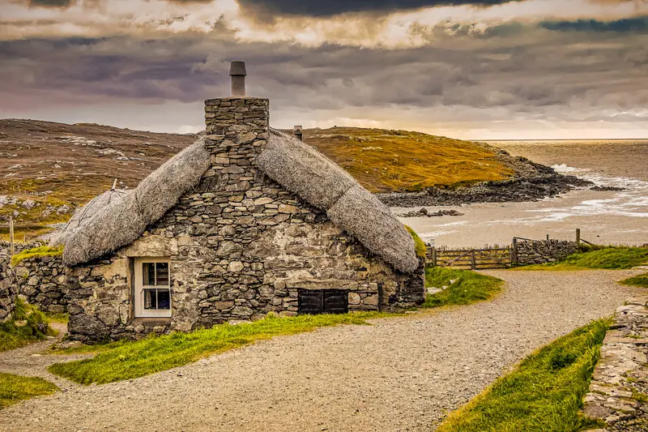
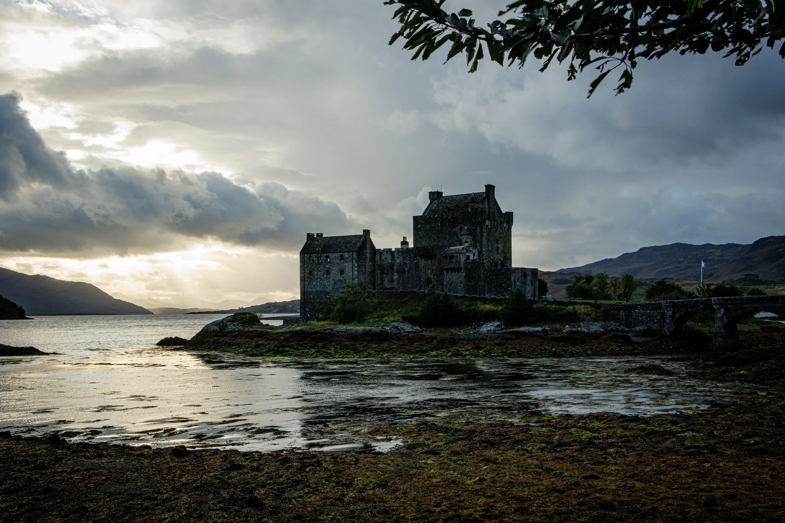

View Edition
Hebrides & Highlands

Eilean Donan, at the confluence of Lochs Duich, Long, and Alsh, on a morning of broken cloud in October. The tide was low — the causeway exposed, the foreground a flat expanse of seaweed-covered rock reflecting the sky. The saltire on the tower was the only moving element in the frame.
The castle that stands now is a twentieth-century reconstruction, completed in 1932 on the ruins of the medieval original, which was destroyed in 1719. The reconstruction is so thorough that the building reads as ancient. What the camera records is the light on the loch and the cloud above the hill behind, which are both entirely genuine.